tempoPlot: Microbiome Time Series Visualization
2026-11-23
Source:vignettes/tempoPlot.Rmd
tempoPlot.RmdIntroduction
tempoPlot plots longitudinal microbiome data stored in
TreeSummarizedExperiment and
MultiAssayExperiment objects. The computation belongs to
miaTime
and mia: they add
divergences, variograms, dissimilarities, states and ordinations to the
object, and tempoPlot draws them. Every function returns a
ggplot object.
This vignette follows one analysis from the sampling design to ordinations and networks. Each step asks a question, computes what it needs with mia or miaTime, and plots the result.
| Question | Function |
|---|---|
| When were samples taken? | plotSwimmer() |
plotGaps() |
|
plotCalendar() |
|
| How does a value change over time? | plotTrend() |
plotTimeEffect() |
|
plotIntervals() |
|
| How does the composition change? | plotComposition() |
plotTiles() |
|
plotHorizon() |
|
plotRanks() |
|
| How fast and how much do communities change? | plotTurnover() |
plotTBI() |
|
plotLagProfile() |
|
plotRecurrence() |
|
plotIndividuality() |
|
plotFingerprint() |
|
plotDOC() |
|
| Are there states and rhythms? | plotTransitionMatrix() |
plotAlluvial() |
|
plotSurvival() |
|
plotLandscape() |
|
plotSpectrum() |
|
plotLagHeatmap() |
|
| Which features or subjects stand out? | plotStats() |
plotVolcano() |
|
plotFeatureScatter() |
|
plotSubjectScatter() |
|
plotTimeLoadings() |
|
| How do subjects move in ordinations and networks? | plotPath() |
plotDirection() |
|
plotProcrustes() |
|
plotNetwork() |
Installation
if (!requireNamespace("remotes", quietly = TRUE))
install.packages("remotes")
remotes::install_github("0xMuluh/tempoPlot")Data
The workflow uses two datasets from miaTime. hitchip1006
holds genus-level profiles of 1006 western adults (Lahti et al. 2014),
some of whom were sampled up to five times. minimalgut
holds a defined community of 16 species in three bioreactors, sampled
three times a day for 20 days under the same perturbations (Shetty et
al. 2022). The cohort has sparse, irregular sampling of many people; the
bioreactors have dense sampling of a few units.
library(tempoPlot)
library(mia)
library(miaTime)
data("hitchip1006", "minimalgut", package = "miaTime")The cohort analysis keeps the 77 subjects sampled at least twice and numbers each subject’s samples as visits.
# Eleven profiles are stored twice; keep the first copy
tse <- hitchip1006[, !duplicated(t(assay(hitchip1006, "counts")))]
tse <- tse[, tse$subject %in% names(which(table(tse$subject) >= 2))]
tse$visit <- factor(ave(tse$time, tse$subject, FUN = rank))The bioreactor analysis uses relative abundances.
mg <- transformAssay(minimalgut, method = "relabundance")Study design
When was each subject sampled?
plotSwimmer() draws one lane per subject with a point for
each sample.
plotSwimmer(tse, time.col = "time", group = "subject",
colour.by = "bmi_group")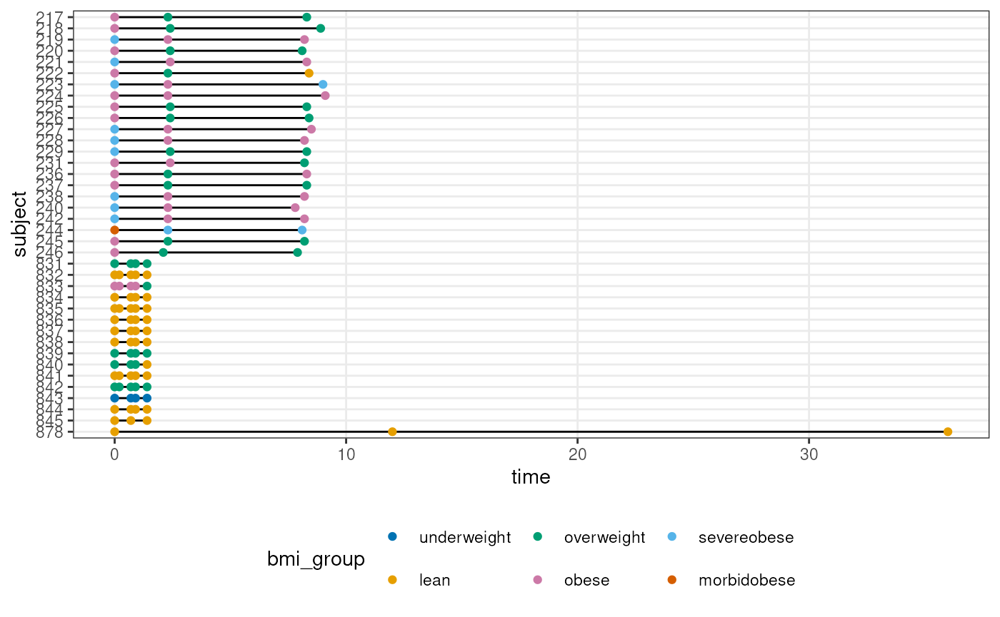
The cohort mixes designs. A group of mostly lean subjects was sampled four or five times over a short span. Most overweight and obese subjects were sampled two or three times over a longer span, and three subjects were followed up only after 12 or more time units.
The bioreactors share one schedule of perturbations.
events draws them as bands (with an end) or
lines (without one).
events <- data.frame(
start = c(0, 152, 432),
end = c(24, NA, 436),
label = c("batch", "Blautia added", "double dilution rate"))
plotSwimmer(mg, time.col = "Time.hr", group = "StudyIdentifier",
events = events)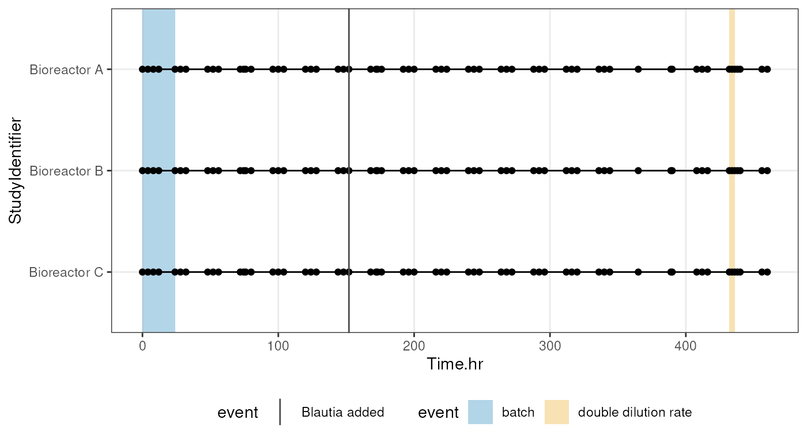
How long are the intervals between samples?
plotGaps() draws the time between consecutive samples of
each subject.
plotGaps(tse, time.col = "time", group = "subject", group.by = "sex",
layout = "box")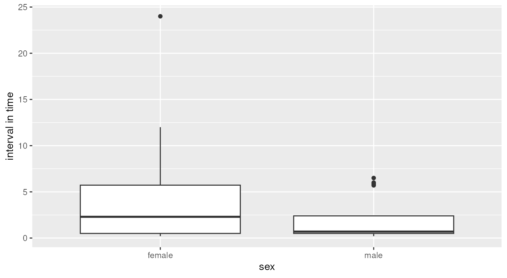
Most intervals are shorter than seven time units; the outliers are
the late follow-ups seen above. Keep these intervals in mind when
choosing time lags or a max.gap.
On which days were samples taken?
plotCalendar() counts samples per day for Date
or POSIXct times. The bioreactor data hold hours since the
start of the run, not dates, so the run is placed on an arbitrary start
date.
mg$date <- as.POSIXct("2020-01-06", tz = "UTC") + mg$Time.hr * 3600
plotCalendar(mg, time.col = "date")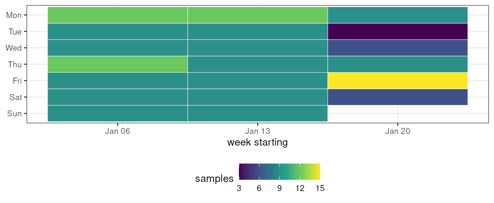
Most days have nine samples, three per bioreactor. The busiest day, 18 days into the run, is the double-dilution perturbation, and one day late in the run has only three samples. The weekdays here are arbitrary; with real dates the same plot shows weekend and holiday gaps.
Values over time
How far does each subject move from their first
sample? addBaselineDivergence() from miaTime
computes the dissimilarity of each sample from the subject’s first one.
plotTrend() draws it by visit.
tse <- addBaselineDivergence(tse, group = "subject", time.col = "time",
assay.type = "counts")
plotTrend(tse, y = "divergence", time.col = "visit", group = "subject",
group.by = "sex", layout = "box")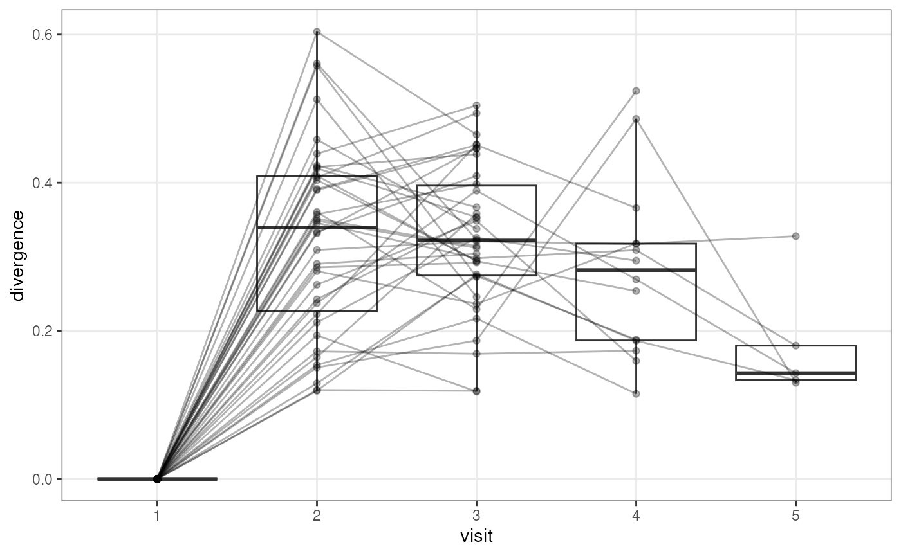
Most of the distance from the first sample is reached by the second visit; later visits are no further away. Visits are ranks, and visits 4 and 5 come only from the densely sampled group, so the same visit lies at different times in different subjects.
plotTrend() reads a colData column, a feature or an
ordination component. Here acetate in each bioreactor, with the
perturbations marked.
plotTrend(mg, y = "Acetate", time.col = "Time.hr",
group = "StudyIdentifier", group.by = "StudyIdentifier",
events = events)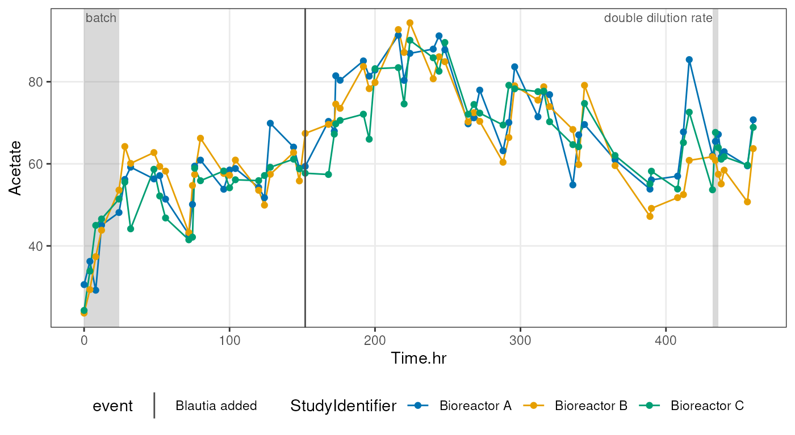
The three bioreactors track each other. Acetate rises after Blautia hydrogenotrophica is added at 152 h, peaks between about 200 and 250 h, and falls back towards its earlier level.
Does the difference in diversity between men and women change
over time? Fit the model you need, one row per time, and pass
the estimates to plotTimeEffect(). Each subject has one
sample per visit, so a linear model per visit compares independent
subjects.
cd <- as.data.frame(colData(tse))
effect <- do.call(rbind, lapply(split(cd, cd$visit), function(d) {
model <- lm(diversity ~ sex, data = d)
ci <- confint(model)["sexmale", ]
data.frame(visit = d$visit[1], estimate = coef(model)[["sexmale"]],
lower = ci[[1]], upper = ci[[2]])
}))
plotTimeEffect(effect, time.col = "visit")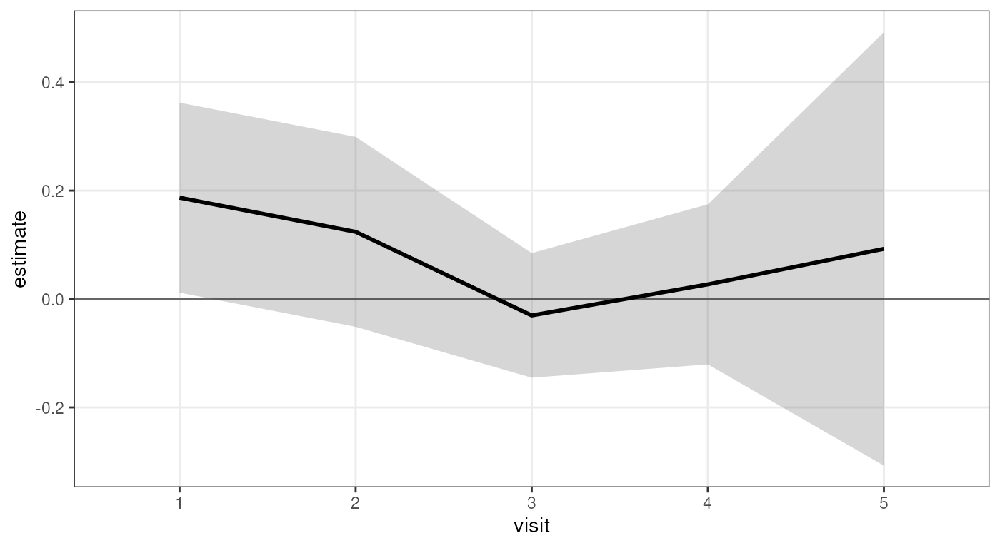
Men had higher diversity than women at the first visit, with an interval that just excludes zero. At later visits the intervals include zero and widen as fewer subjects remain.
Composition over time
Which species dominate, and when?
plotComposition() stacks the most abundant features over
time.
plotComposition(mg, time.col = "Time.hr", group = "StudyIdentifier",
top = 8, layout = "area")
Bacteroides xylanisolvens makes up about half of each community. Blautia hydrogenotrophica appears after it is added at 152 h, and the three bioreactors follow similar courses.
In the cohort, level = "group" averages the phyla of the
subjects in each group at each visit.
phyla <- agglomerateByRank(tse, rank = "Phylum")
plotComposition(phyla, time.col = "visit", group = "subject",
level = "group", group.by = "sex")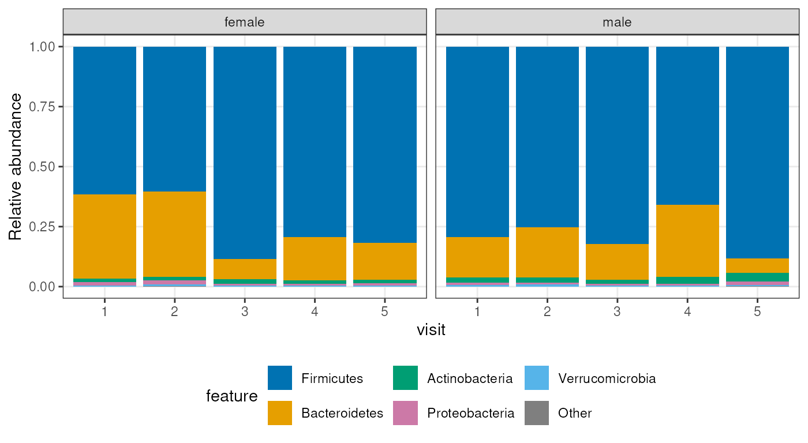
Firmicutes and Bacteroidetes make up nearly all of each profile. The Bacteroidetes share varies between visits; later visits average fewer subjects, so their means are less precise.
Which species rise and fall together?
plotTiles() draws features by time as a heatmap.
value = "change" shows the change from the first sample,
and order.by = "cluster" puts features with similar courses
next to each other.
plotTiles(mg, time.col = "Time.hr", group = "StudyIdentifier",
assay.type = "relabundance", value = "change", order.by = "cluster",
level = "group")
Bacteroides xylanisolvens gains and Eubacterium siraeum loses most from the start of the run, and Blautia hydrogenotrophica appears after 152 h. The other species change less.
When does each species leave its earlier range?
plotIntervals() draws time intervals of features from a
table with columns feature, start and
end, such as the significant intervals of MetaLonDA. Here
an interval is a run of times after 152 h in which the mean relative
abundance over the three bioreactors lies above or below its range
before 152 h.
ra <- assay(mg, "relabundance")
time <- mg$Time.hr
mean_ra <- t(rowsum(t(ra), time) / as.vector(table(time)))
times <- as.numeric(colnames(mean_ra))
before <- times < 152
low <- apply(mean_ra[, before], 1, min)
high <- apply(mean_ra[, before], 1, max)
after <- times[!before]
intervals <- do.call(rbind, lapply(rownames(mean_ra), function(f) {
v <- mean_ra[f, !before]
side <- ifelse(v > high[f], "above", ifelse(v < low[f], "below", NA))
runs <- rle(side)
end <- cumsum(runs$lengths)
start <- end - runs$lengths + 1
keep <- !is.na(runs$values)
data.frame(feature = rep(f, sum(keep)), start = after[start[keep]],
end = after[end[keep]], direction = runs$values[keep])
}))
plotIntervals(intervals, colour.by = "direction", top = 10)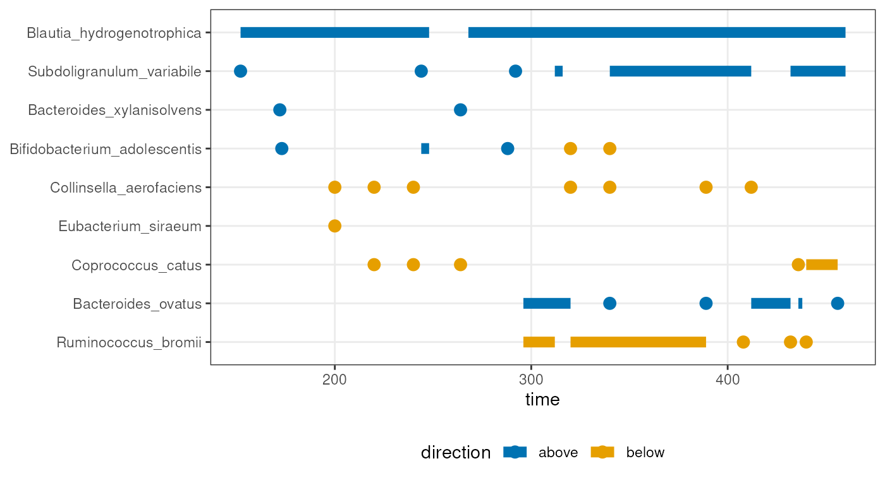
Blautia hydrogenotrophica stays above its earlier range for most of the time after it is added. Subdoligranulum variabile rises above its range from about 340 h, and Ruminococcus bromii falls below its range between about 300 and 390 h. Points mark single times.
plotHorizon() folds each feature into a short strip, so
that many features fit in one figure. Each strip is centred on the
feature’s median; darker bands are further from it.
plotHorizon(mg, time.col = "Time.hr", group = "StudyIdentifier",
assay.type = "relabundance", top = 8)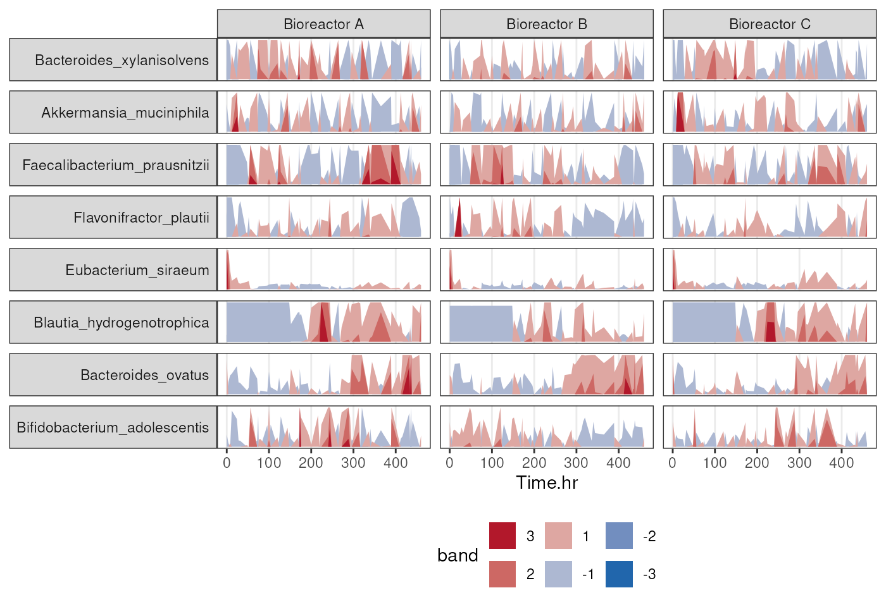
Blautia hydrogenotrophica stays below its median until it is added and above it afterwards. Bacteroides ovatus rises above its median after about 300 h in all three bioreactors.
Does the order of the species change?
plotRanks() follows the rank of each feature.
plotRanks(mg, time.col = "Time.hr", group = "StudyIdentifier", top = 8)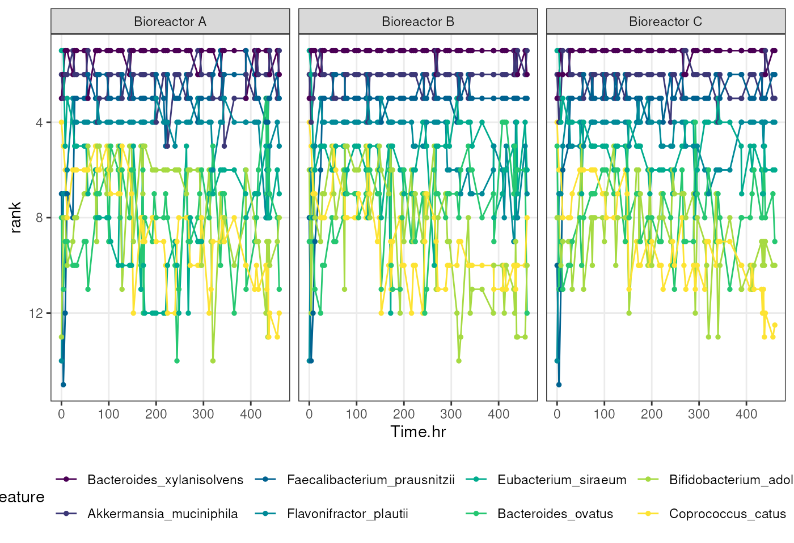
Bacteroides xylanisolvens and Akkermansia muciniphila hold the top two ranks for most of the run; the species below them change places often.
Community change
How many species appear and disappear between
samples? plotTurnover() counts the features gained
and lost between consecutive samples.
plotTurnover(mg, time.col = "Time.hr", group = "StudyIdentifier")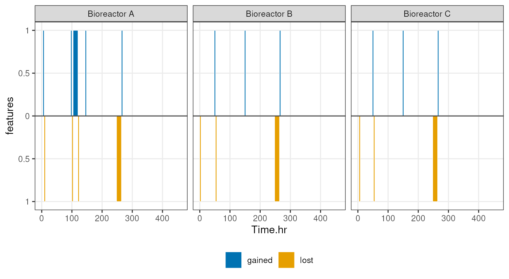
In this defined community almost every species is detected in every sample. At most one species is lost or gained between two samples.
Which subjects lost or gained most genera?
plotTBI() splits the change between two time points into
losses and gains (Legendre 2019), here of genera present or absent at
the first and second visit.

Points above the diagonal gained more genera than they lost; points below lost more. All changes are small: the genera present change little between the first two visits.
How does dissimilarity grow with the time between
samples? addVariogram() from miaTime computes the
mean dissimilarity between samples of a subject at each time lag, with
an interval. plotLagProfile() draws it.
tse <- transformAssay(tse, method = "hellinger")
tse <- addVariogram(tse, time.col = "time", group = "subject",
assay.type = "hellinger", method = "euclidean", squared = TRUE,
time.lag = c(1.5, 2, 2.5, 3, 4, 6, 8, 9))
plotLagProfile(tse)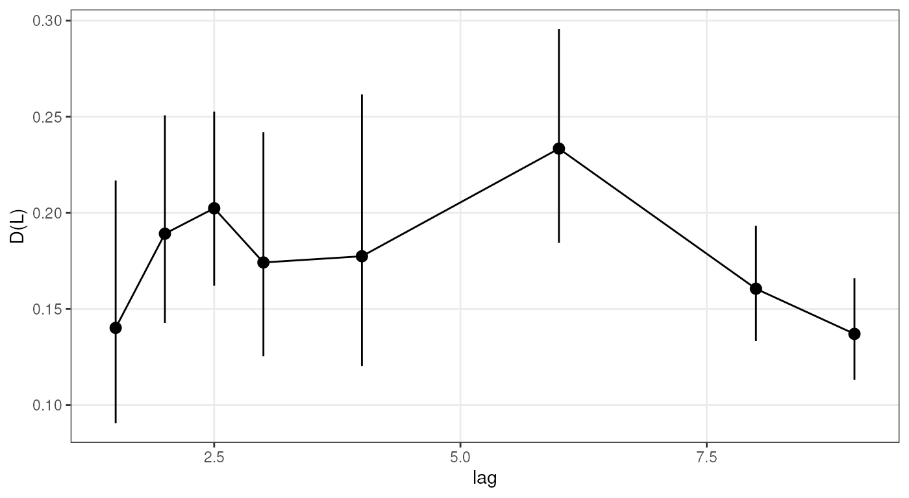
Dissimilarity does not grow steadily with the lag. Samples nine time units apart are about as similar as samples 1.5 units apart. Each lag pools different subjects, so in this cohort the profile also reflects which subjects contribute to it.
The next three plots read a dissimilarity matrix stored by
addDissimilarity() from mia.
tse <- addDissimilarity(tse, method = "bray", assay.type = "counts")
mg <- addDissimilarity(mg, method = "bray", assay.type = "counts")Does a community return to earlier states?
plotRecurrence() draws the dissimilarity between every pair
of samples of a subject.
plotRecurrence(mg, dissimilarity = "bray", time.col = "Time.hr",
group = "StudyIdentifier")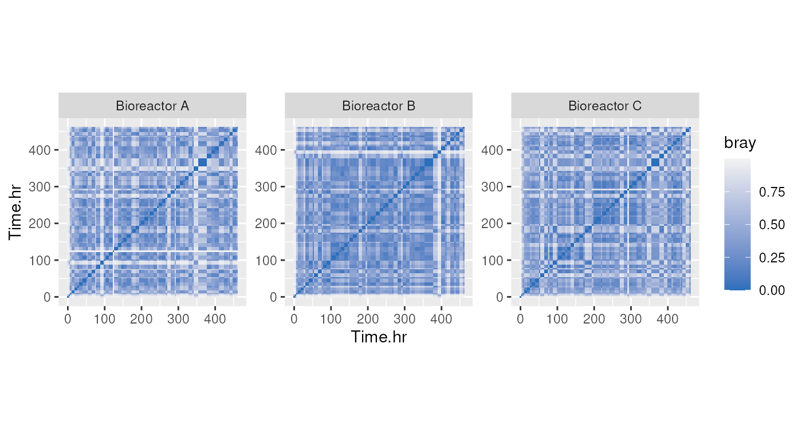
The first samples differ from all later ones, the bright edge at time zero. A bright line marks a sample unlike all others. Dark areas away from the diagonal mark returns to an earlier state.
Are samples of the same person more alike than samples of
different people? plotIndividuality() compares the
dissimilarities within subjects with those between subjects.
plotIndividuality(tse, dissimilarity = "bray", group = "subject")
Samples of the same subject are more similar than samples of different subjects. The within-subject curve peaks near 0.3, the between-subject curve between 0.5 and 0.65.
Can a person be recognised from an earlier sample?
plotFingerprint() asks whether each subject’s second sample
is closest to their own first sample (Franzosa et al. 2015).
plotFingerprint(tse, dissimilarity = "bray", time.col = "visit",
group = "subject", time.point = c("1", "2"))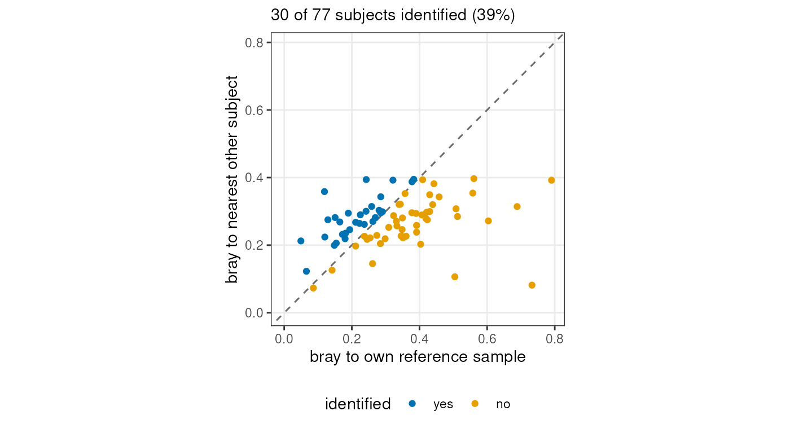
The title gives the share identified: 30 of 77 subjects (39%). Subjects above the diagonal are closer to their own first sample than to anyone else’s.
Do communities of different people follow the same
dynamics? plotDOC() draws the dissimilarity of
each pair of samples against the overlap of their features (Bashan et
al. 2016).
tse <- transformAssay(tse, method = "relabundance")
tse <- addDissimilarity(tse, method = "overlap",
assay.type = "relabundance")
tse <- addDissimilarity(tse, method = "jsd", assay.type = "relabundance")
plotDOC(tse, overlap = "overlap", dissimilarity = "jsd",
group = "subject", pairs = "between")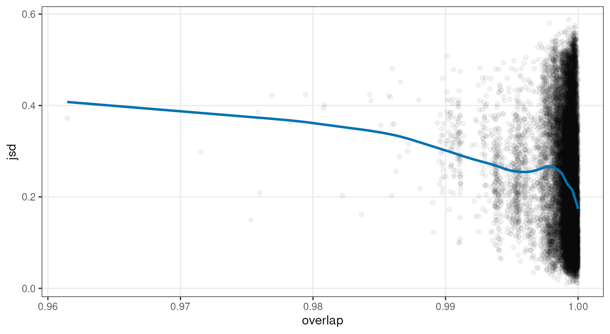
Overlap is close to one for every pair: the genera two people share carry almost all of the abundance of both profiles. Within that narrow range, dissimilarity falls as overlap approaches one. Bashan et al. read this negative slope as dynamics shared across people.
States and rhythms
Does the dominant genus change between visits?
addDominant() from mia stores the dominant genus of each
sample, keeping the four most common and pooling the rest.
plotTransitionMatrix() draws the share of moves from each
state to the next.
tse <- addDominant(tse, name = "dominant", n = 4)
plotTransitionMatrix(tse, state.col = "dominant", time.col = "time",
group = "subject")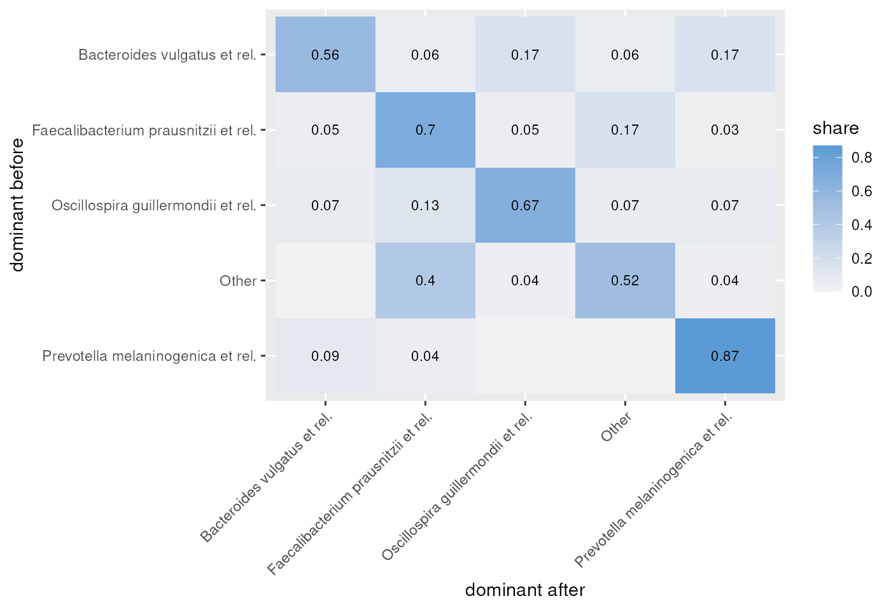
The diagonal dominates: most subjects keep their dominant genus from one sample to the next. Prevotella is the most stable state (0.86), and samples dominated by a genus outside the top four often move to Faecalibacterium.
plotAlluvial() draws the same moves as flows over the
first three visits. It needs the ggalluvial package.
plotAlluvial(tse[, tse$visit %in% c("1", "2", "3")],
state.col = "dominant", time.col = "visit", group = "subject")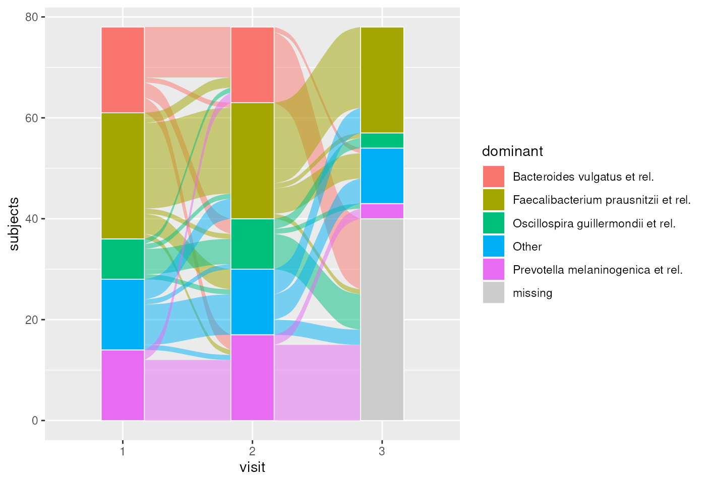
Most flows keep their colour. The grey block at visit 3 holds the subjects sampled only twice.
How long does a dominant genus last?
plotSurvival() draws the Kaplan-Meier curve of the time
until the dominant genus first differs from the one at the first
sample.
plotSurvival(tse, time.col = "time", group = "subject",
event = "state.exit", state.col = "dominant", group.by = "sex")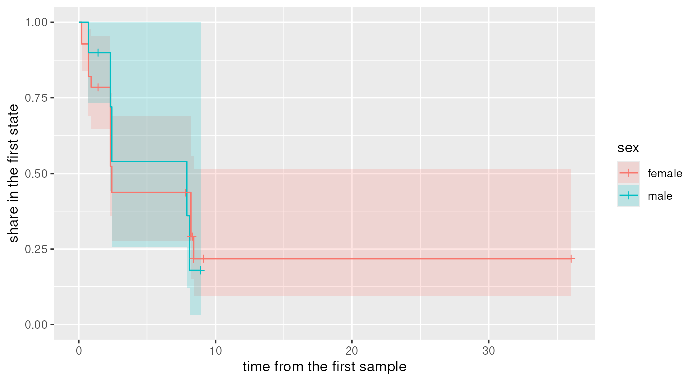
The share of subjects with their first dominant genus falls to about a third within ten time units, and the curves of women and men overlap. Crosses mark subjects whose last sample still had the first state.
Does a genus have alternative states?
plotLandscape() draws the density of a variable, or its
potential, the negative log of the density. Bistability needs many
people, so this step uses the first sample of all 1006 subjects.
first <- hitchip1006[, hitchip1006$time == 0]
first <- transformAssay(first, method = "relabundance")
first <- transformAssay(first, assay.type = "relabundance",
method = "log10", pseudocount = 1e-4, name = "log10")
plotLandscape(first, y = "Prevotella melaninogenica et rel.",
assay.type = "log10", scale = "potential")
The potential has two wells: a deep one near 0.2% relative abundance (log10 of -2.7) and a shallow one near 40% (-0.4). Most people sit in the low state and a minority in the high one.
Is there a daily rhythm? plotSpectrum()
draws the periodogram of a series. The bioreactors were fasted once a
day.
plotSpectrum(mg, y = "Acetate", time.col = "Time.hr",
group = "StudyIdentifier")
The peaks on either side of 0.042 cycles per hour, a period of 24 h, match the daily fasting. The highest power, at the lowest frequencies, is the slow rise and fall of acetate seen in the trend above.
Which species change before or after acetate?
plotLagHeatmap() correlates each feature with a target at
lags of a few samples. Clr values suit correlations better than
proportions.
mg <- transformAssay(mg, assay.type = "counts", method = "clr",
pseudocount = 1)
plotLagHeatmap(mg, target = "Acetate", time.col = "Time.hr",
group = "StudyIdentifier", assay.type = "clr")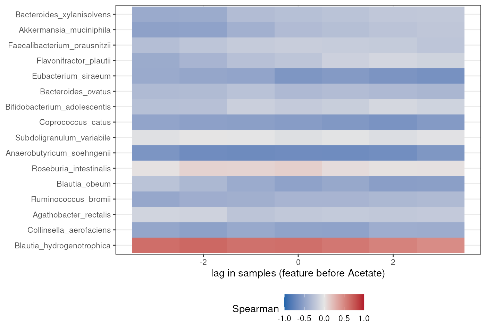
Blautia hydrogenotrophica rises with acetate and Anaerobutyricum soehngenii falls with it. The correlations are about the same at every lag, so neither series leads; both follow the change after 152 h.
Features and subjects that stand out
Which genera are bimodal?
addBimodality() from miaTime stores the coefficient of
bimodality of each feature in rowData(), here of clr
values, and plotStats() draws the highest.
tse <- transformAssay(tse, assay.type = "counts", method = "clr",
pseudocount = 1)
tse <- addBimodality(tse, assay.type = "clr")
plotStats(tse, stat = "bimodality", top = 20, colour.by = "Phylum")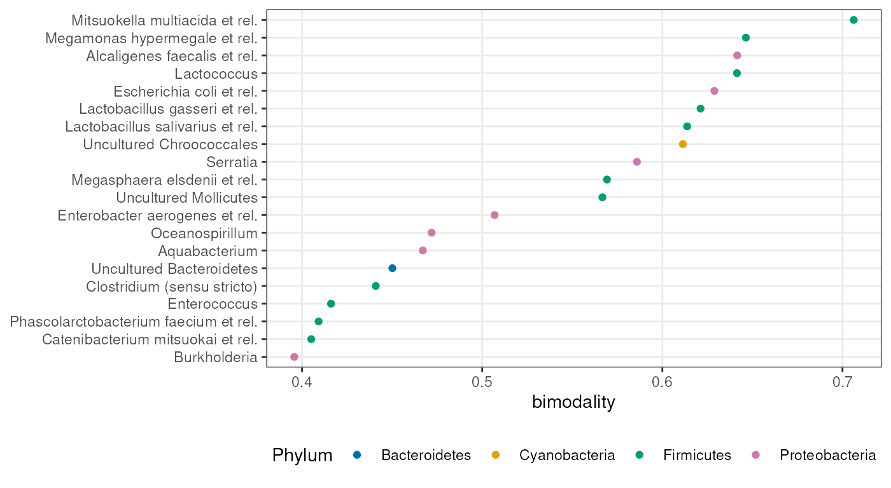
The coefficient runs from 0 to 1. High values mark genera that are abundant in some samples and rare in others, led here by Mitsuokella multiacida and Megamonas hypermegale.
Which genera changed between the first and second
visit? Compute the change and its p-value with any test, store
them in rowData(), and draw them with
plotVolcano(). Here the mean paired difference in clr
values, tested with a one-sample t-test.
pair <- tse[, tse$visit %in% c("1", "2")]
pair <- pair[, order(pair$visit, pair$subject)]
clr <- assay(pair, "clr")
d <- clr[, pair$visit == "2"] - clr[, pair$visit == "1"]
rowData(tse)$change <- rowMeans(d)
rowData(tse)$p <- apply(d, 1, function(v) t.test(v)$p.value)
rowData(tse)$q <- p.adjust(rowData(tse)$p, method = "fdr")
plotVolcano(tse, effect = "change", p.col = "q")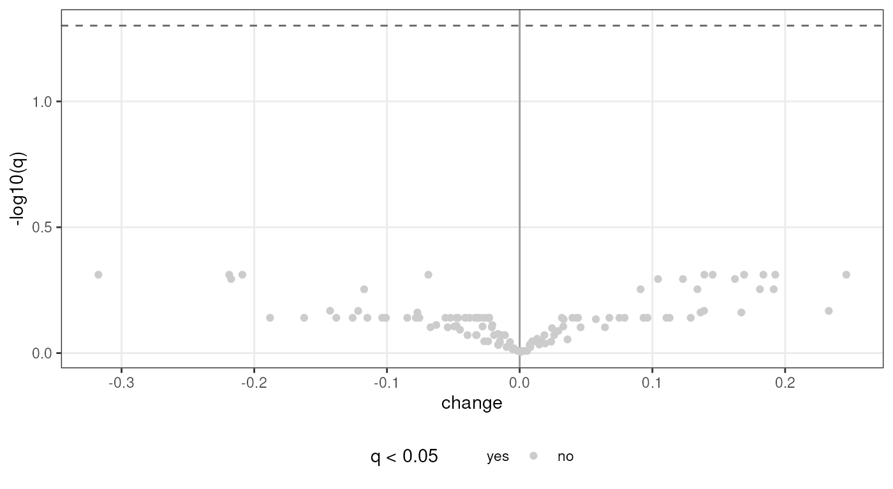
No genus passes q < 0.05, the dashed line; points above it would be coloured and labelled. The mean changes between the first two visits are small relative to their variation between subjects.
Do the species follow Taylor’s law over time?
plotFeatureScatter() draws two statistics per feature.
Computed over the samples of each bioreactor, the mean and variance of
the absolute abundances over time give the temporal Taylor’s law.
plotFeatureScatter(mg, x.stat = "mean", y.stat = "variance",
fit = "power", group.by = "StudyIdentifier")
Variance grows as a power of the mean, with slopes of 1.8 to 2.2 in the three bioreactors (given in the title). A slope near 2 means that each species fluctuates by a similar proportion of its mean.
Which subjects are diverse but unstable?
plotSubjectScatter() draws two statistics per subject, here
the mean and standard deviation of diversity over each subject’s
samples.
tse$mean <- ave(tse$diversity, tse$subject, FUN = mean)
tse$sd <- ave(tse$diversity, tse$subject, FUN = sd)
plotSubjectScatter(tse, x.stat = "mean", y.stat = "sd",
group = "subject", colour.by = "sex", quadrants = TRUE)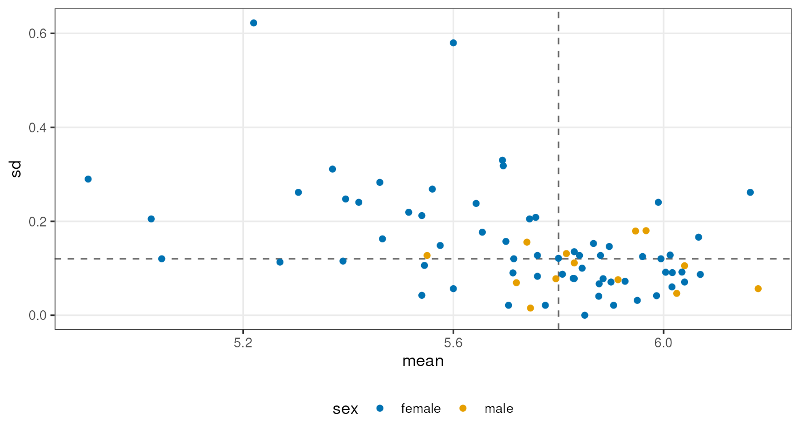
The dashed lines mark the medians. Subjects in the upper left have below-median diversity that varies more than in most subjects.
What are the main temporal patterns shared by the
bioreactors? A tensor decomposition such as TEMPTED (Shi et
al. 2024) splits the data into subject, feature and time loadings. Store
its result in metadata(), and
plotTimeLoadings() draws the time loadings. This step needs
the tempted package.
metadata(mg)$tempted <- tempted::tempted_all(t(assay(mg, "counts")),
timepoint = mg$Time.hr, subjectID = as.character(mg$StudyIdentifier),
r = 2, threshold = 1, pseudo = 0.5, do_ratio = FALSE)
plotTimeLoadings(mg, source = "tempted")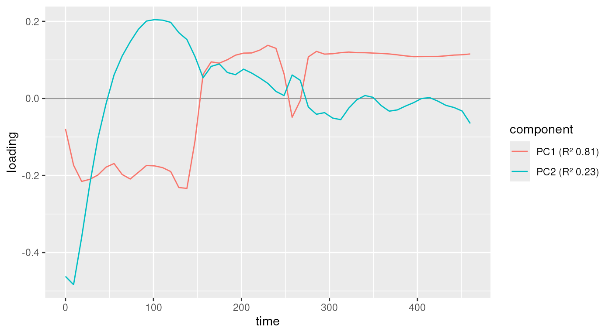
The first component changes sign when Blautia hydrogenotrophica is added at 152 h and separates the communities before and after. The second component captures the change during the first 100 h of the run. The legend gives the variance each component explains.
Ordinations and networks
Do subjects move in a common direction?
addMDS() from mia stores a PCoA, and
plotPath() connects each subject’s samples in it.
centroids = TRUE adds the mean path of each group.
tse <- addMDS(tse, assay.type = "relabundance", method = "bray",
name = "PCoA")
plotPath(tse, time.col = "visit", group = "subject", dimred = "PCoA",
group.by = "sex", centroids = TRUE)
Each grey arrow is one step of one subject. Most steps are short next to the distances between subjects. The mean paths of women and men stay near the centre, so the cohort has no common direction of change.
With many samples per subject, plotDirection()
summarises the directions of the steps between consecutive samples.
mg <- addMDS(mg, assay.type = "relabundance", method = "bray",
name = "PCoA")
plotDirection(mg, time.col = "Time.hr", group = "StudyIdentifier",
dimred = "PCoA", facet.by = "StudyIdentifier")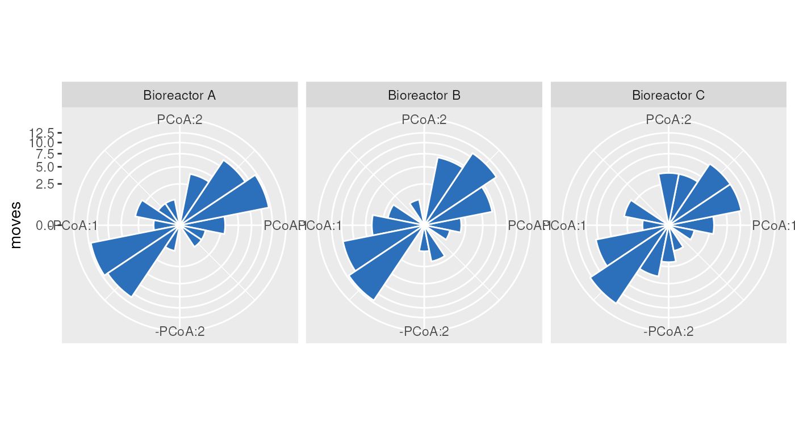
In all three bioreactors most steps point to the upper right or the lower left: the communities move back and forth along one direction.
Do two ordinations tell the same story?
plotProcrustes() rotates one ordination onto another and
joins the two positions of each sample. Here the Bray-Curtis PCoA
against the Aitchison PCoA, the Euclidean distance of clr values.
mg <- addMDS(mg, assay.type = "clr", method = "euclidean",
name = "Aitchison")
plotProcrustes(mg, dimred = "PCoA", dimred2 = "Aitchison",
colour.by = "StudyIdentifier")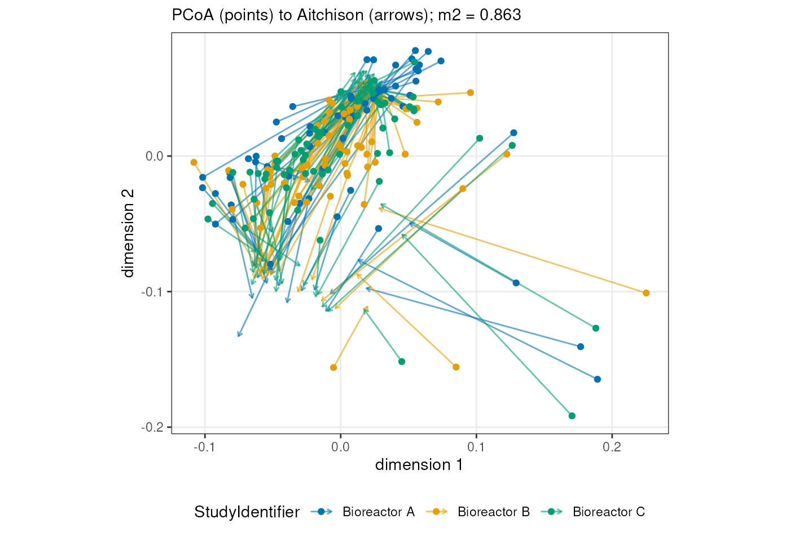
The statistic m2 in the title runs from 0 for identical configurations to 1. Here it is 0.86: the two distances arrange these samples differently, so a pattern seen in one ordination should be checked in the other.
Do species associations change after a perturbation?
Compute an edge table, store it in metadata(), and draw it
with plotNetwork(). Here clr correlations above 0.6 before
and after Blautia hydrogenotrophica was added at 152 h;
diff = TRUE marks the edges gained and lost.
window <- ifelse(mg$Time.hr < 152, "before", "after")
edges <- do.call(rbind, lapply(c("before", "after"), function(w) {
r <- cor(t(assay(mg, "clr")[, window == w]))
i <- which(abs(r) > 0.6 & upper.tri(r), arr.ind = TRUE)
data.frame(from = rownames(r)[i[, 1]], to = rownames(r)[i[, 2]],
weight = r[i], window = w)
}))
metadata(mg)$correlations <- edges
plotNetwork(mg, edges = "correlations", split.by = "window", diff = TRUE)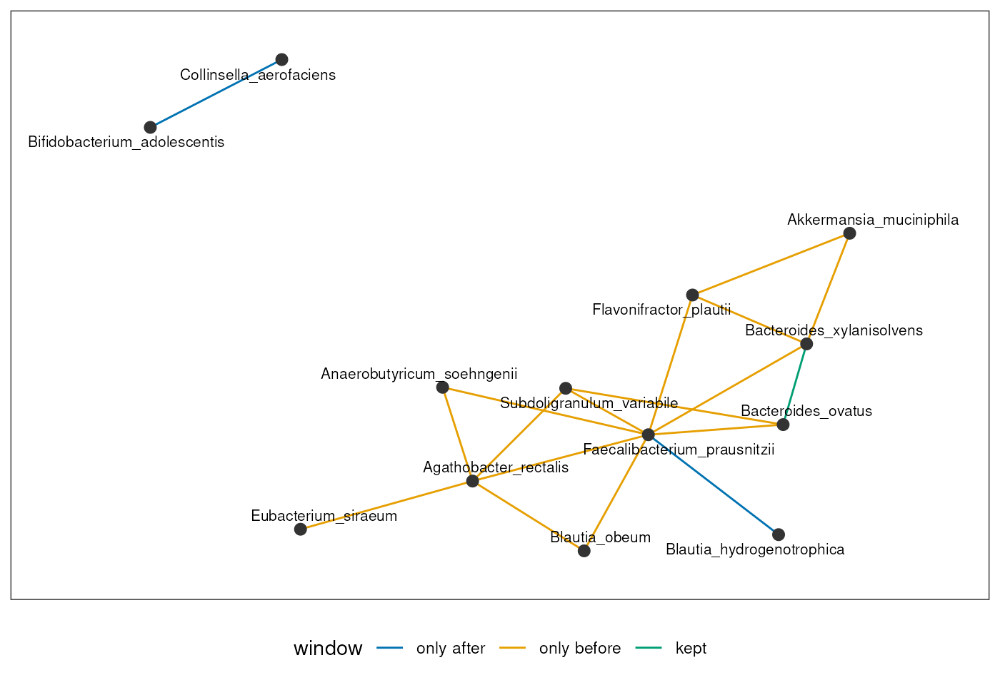
Most strong correlations of the first 152 h are absent afterwards. After the addition, Blautia hydrogenotrophica correlates with Faecalibacterium prausnitzii, and only the edge between the two Bacteroides species is kept.
Combining plots
All functions return ggplot objects, so the patchwork
package stacks them over a shared time axis, here for one
bioreactor.
library(patchwork)
a <- mg[, mg$StudyIdentifier == "Bioreactor A"]
plotTrend(a, y = "Acetate", time.col = "Time.hr") /
plotComposition(a, time.col = "Time.hr", top = 8, layout = "area") /
plotTurnover(a, time.col = "Time.hr") +
plot_layout(axes = "collect")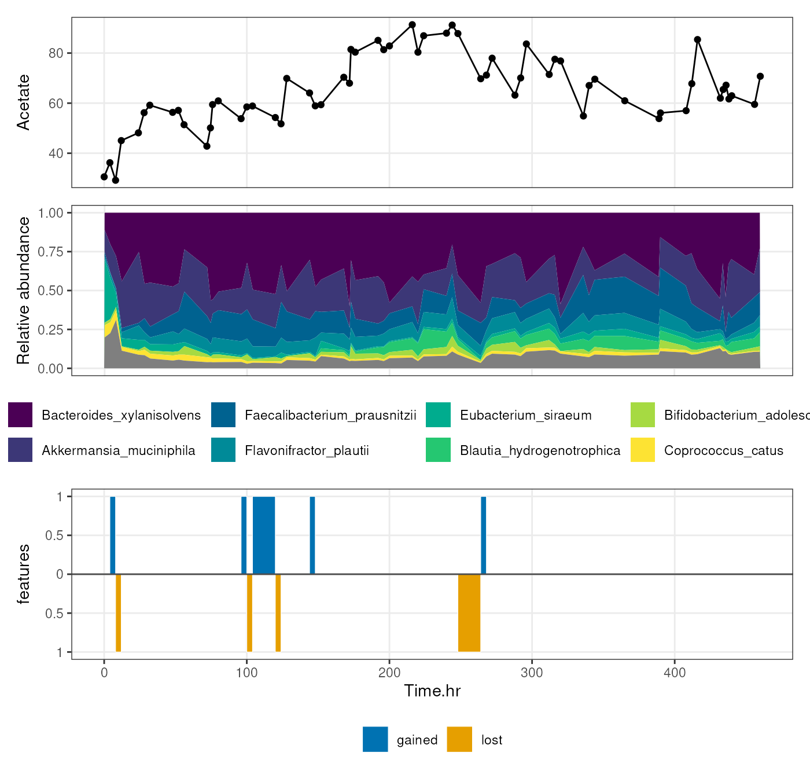
References
Bashan A, et al. (2016). Universality of human microbial dynamics. Nature 534(7606):259-262.
Franzosa EA, et al. (2015). Identifying personal microbiomes using metagenomic codes. PNAS 112(22):E2930-E2938.
Lahti L, et al. (2014). Tipping elements in the human intestinal ecosystem. Nature Communications 5:4344.
Legendre P (2019). A temporal beta-diversity index to identify sites that have changed in exceptional ways in space-time surveys. Ecology and Evolution 9(6):3500-3514.
Shetty SA, et al. (2022). Dynamic metabolic interactions and trophic roles of human gut microbes identified using a minimal microbiome exhibiting ecological properties. The ISME Journal 16:2144-2159.
Shi P, et al. (2024). TEMPTED: time-informed dimensionality reduction for longitudinal microbiome studies. Genome Biology 25:317.
Session info
Session info
sessionInfo()
#> R version 4.6.1 (2026-06-24)
#> Platform: x86_64-pc-linux-gnu
#> Running under: Ubuntu 24.04.5 LTS
#>
#> Matrix products: default
#> BLAS: /usr/lib/x86_64-linux-gnu/openblas-pthread/libblas.so.3
#> LAPACK: /usr/lib/x86_64-linux-gnu/openblas-pthread/libopenblasp-r0.3.26.so; LAPACK version 3.12.0
#>
#> locale:
#> [1] LC_CTYPE=en_US.UTF-8 LC_NUMERIC=C
#> [3] LC_TIME=en_US.UTF-8 LC_COLLATE=en_US.UTF-8
#> [5] LC_MONETARY=en_US.UTF-8 LC_MESSAGES=en_US.UTF-8
#> [7] LC_PAPER=en_US.UTF-8 LC_NAME=C
#> [9] LC_ADDRESS=C LC_TELEPHONE=C
#> [11] LC_MEASUREMENT=en_US.UTF-8 LC_IDENTIFICATION=C
#>
#> time zone: UTC
#> tzcode source: system (glibc)
#>
#> attached base packages:
#> [1] stats4 stats graphics grDevices utils datasets methods
#> [8] base
#>
#> other attached packages:
#> [1] patchwork_1.3.2 miaTime_1.3.7
#> [3] mia_1.21.34 TreeSummarizedExperiment_2.21.0
#> [5] Biostrings_2.81.9 XVector_0.53.0
#> [7] SingleCellExperiment_1.35.2 MultiAssayExperiment_1.39.1
#> [9] SummarizedExperiment_1.43.0 Biobase_2.73.2
#> [11] GenomicRanges_1.65.4 Seqinfo_1.3.2
#> [13] IRanges_2.47.5 S4Vectors_0.51.10
#> [15] BiocGenerics_0.59.13 generics_0.1.4
#> [17] MatrixGenerics_1.25.0 matrixStats_1.5.0
#> [19] tempoPlot_0.99.67 knitr_1.52
#> [21] BiocStyle_2.41.0
#>
#> loaded via a namespace (and not attached):
#> [1] RColorBrewer_1.1-3 shape_1.4.6.1
#> [3] jsonlite_2.0.0 magrittr_2.0.5
#> [5] ggbeeswarm_0.7.3 farver_2.1.2
#> [7] rmarkdown_2.32 fs_2.1.0
#> [9] ragg_1.5.2 vctrs_0.7.3
#> [11] DelayedMatrixStats_1.35.0 htmltools_0.5.9
#> [13] S4Arrays_1.13.3 BiocNeighbors_2.7.3
#> [15] SparseArray_1.13.5 sass_0.4.10
#> [17] bslib_0.12.0 htmlwidgets_1.6.4
#> [19] desc_1.4.3 plyr_1.8.9
#> [21] DECIPHER_3.9.6 cachem_1.1.0
#> [23] igraph_2.3.4 iterators_1.0.14
#> [25] lifecycle_1.0.5 pkgconfig_2.0.3
#> [27] rsvd_1.0.6 Matrix_1.7-6
#> [29] R6_2.6.1 fastmap_1.2.0
#> [31] rbibutils_2.4.1 digest_0.6.39
#> [33] tempted_0.1.2 scater_1.41.3
#> [35] irlba_2.4.1 textshaping_1.0.5
#> [37] vegan_2.7-6 beachmat_2.29.3
#> [39] labeling_0.4.3 abind_1.4-8
#> [41] mgcv_1.9-4 compiler_4.6.1
#> [43] withr_3.0.3 S7_0.2.2
#> [45] BiocParallel_1.47.0 viridis_0.6.5
#> [47] DBI_1.3.0 MASS_7.3-66
#> [49] quantreg_6.1 rappdirs_0.3.4
#> [51] DelayedArray_0.39.8 bluster_1.23.1
#> [53] permute_0.9-10 tools_4.6.1
#> [55] vipor_0.4.7 otel_0.2.0
#> [57] beeswarm_0.4.0 ape_5.8-1
#> [59] glue_1.8.1 quadprog_1.5-8
#> [61] nlme_3.1-171 grid_4.6.1
#> [63] cluster_2.1.8.3 reshape2_1.4.5
#> [65] gtable_0.3.6 tidyr_1.3.2
#> [67] BiocSingular_1.29.3 ScaledMatrix_1.21.0
#> [69] foreach_1.5.2 ggrepel_0.9.8
#> [71] pillar_1.11.1 stringr_1.6.0
#> [73] yulab.utils_0.2.5 splines_4.6.1
#> [75] dplyr_1.2.1 treeio_1.37.1
#> [77] lattice_0.23-1 survival_3.8-12
#> [79] SparseM_1.84-2 tidyselect_1.2.1
#> [81] DirichletMultinomial_1.55.1 scuttle_1.23.2
#> [83] gridExtra_2.3.1 bookdown_0.48
#> [85] xfun_0.62 stringi_1.8.9
#> [87] lazyeval_0.2.3 yaml_2.3.12
#> [89] boot_1.3-32 evaluate_1.0.5
#> [91] codetools_0.2-20 tibble_3.3.1
#> [93] BiocManager_1.30.27 cli_3.6.6
#> [95] systemfonts_1.3.2 Rdpack_2.6.6
#> [97] jquerylib_0.1.4 Rcpp_1.1.2
#> [99] parallel_4.6.1 MatrixModels_0.5-4
#> [101] pkgdown_2.2.1 ggplot2_4.0.3
#> [103] ggalluvial_0.12.6 sparseMatrixStats_1.25.0
#> [105] glmnet_5.1 decontam_1.33.0
#> [107] viridisLite_0.4.3 tidytree_0.4.8
#> [109] scales_1.4.0 np_0.80-1
#> [111] purrr_1.2.2 crayon_1.5.3
#> [113] rlang_1.3.0